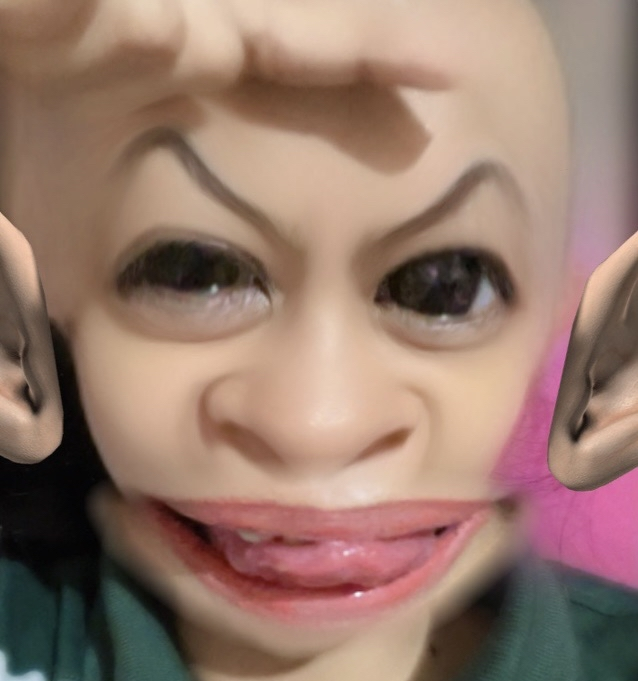

You care quietly.
You do things for people without making a presentation out of it. Sometimes you probably don't even realize that somebody noticed.
A small internet archive
In case you forget how much
you matter to the people
who know you.

Dear Raiah,
This is not really a birthday letter.
It is more like a collection of things I have noticed, remembered, and probably never said properly because saying certain things out loud makes them sound smaller than they actually are.
So I put them here instead.
You can read this whenever you want. You can skip parts. You can come back months from now and pretend you found an old website somebody made for you.
I suppose that is exactly what this is.
things you probably
don't notice about yourself
You do things for people without making a presentation out of it. Sometimes you probably don't even realize that somebody noticed.
Very busy. The kind of busy where school, responsibilities, and everything else somehow become more important than remembering to stop for yourself.
Even when things pile up, you somehow find a way to continue. I don't think you give yourself enough credit for that.
You are considerably more memorable than you probably intended to be.
Yes, I remember more than you think.
The conversations that somehow lasted much longer than either of us planned.
The little things you mentioned casually that I remembered anyway.
The moments when you were happy and didn't have to explain why.
You are allowed to have a slower day.
You are allowed to look around and feel like everyone else is somehow ahead of you. Just don't mistake that feeling for a fact.
Your life is not a race that everybody else started before you.
There will be days when you accomplish a lot, and there will be days when getting through everything already on your plate is enough.
Neither version of you is less deserving of being proud of herself.
You don't have to have everything figured out.
Keep the silly moments. Keep the excitement. Keep the things that make you laugh for no particularly intelligent reason.
You deserve memories that aren't made only from surviving difficult things.
Let yourself enjoy them.Some forms of love are inconveniently practical.
It is remembering that somebody hasn't eaten. It is noticing when they have been awake too long. It is remembering the small things they casually mentioned weeks ago.
It is caring without needing a dramatic reason for it.
You matter to me.
I don't keep people around simply because they're easy to keep around.
I keep people around because I find them worth the inconvenience of caring.
If you're reading this years from now, I hope you're somewhere you wanted to be.
And if you're not, I hope you haven't convinced yourself that the story is over simply because it took a different turn.
There are still places you haven't seen, people you haven't met, and versions of yourself you haven't become yet.
Distance is not disappearance.
I hope you know that being far away doesn't erase the people who mattered.
Some friendships survive in ordinary ways. A message. A random conversation. A memory that suddenly shows up when you weren't looking for it.
And if life ever takes us in completely different directions, I hope I can still look back and be glad that our paths crossed.
I would rather say "see you later" and mean it.